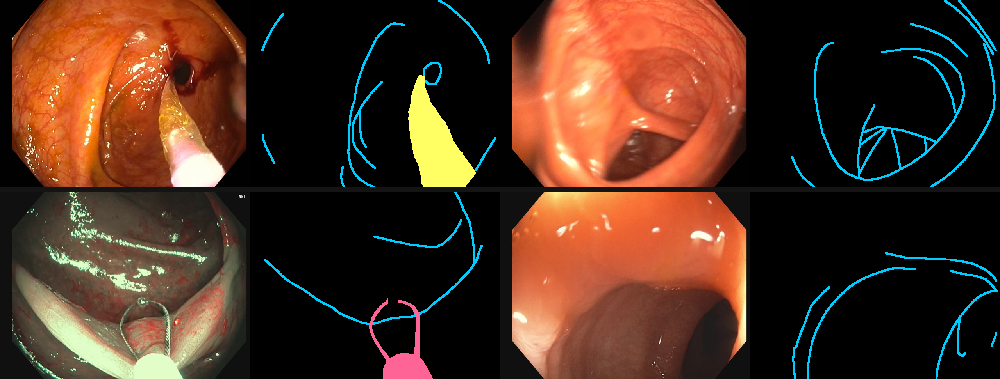
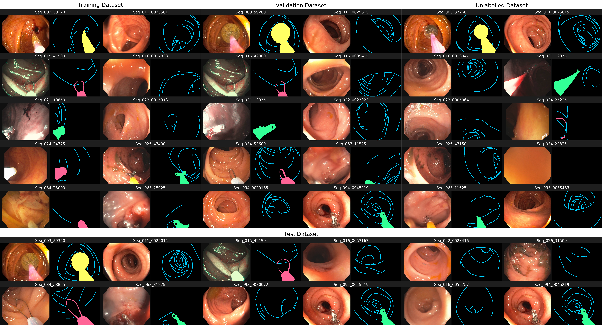

EndoVis 2024 Challenge · Challenge concluded
SegCol Challenge
Semantic Segmentation for Tools and Fold Edges
in Colonoscopy Data
University College London · Surgical Robot Vision · EndoMapper

Overview
SegCol is a colonoscopy dataset and benchmark for joint segmentation of anatomical fold edges and endoscopic instruments. The data were sampled from EndoMapper videos and capture challenging variation in anatomy, illumination, motion, occlusion and image quality.
The challenge has concluded. This page documents the released dataset, evaluation protocol and published reference baselines.
Dataset
SegCol contains 8,440 RGB frames at 640 × 480 resolution. Frames were sampled in consecutive 40-frame batches at 10–12 FPS. All partitions, including labels hidden during the challenge, are now publicly available.
| Partition | Frames | Labels |
|---|---|---|
| Training | 2,000 | Public |
| Validation | 560 | Public |
| Formerly unlabelled training pool | 5,320 | Public |
| Test | 560 | Public |
| Total | 8,440 | Released |
Annotations
Each single-channel mask encodes background (0), Captivator (127), Forceps (128), Balloon (129) and one-pixel fold edges (255).

Benchmark
Tasks
Task 1 — Supervised segmentation. Train on the labelled development set and segment fold edges and three instrument classes on held-out frames.
Task 2 — Active learning. Select a 400-frame annotation subset from the 5,320-frame pool and retrain the reference models under a fixed annotation budget.
Evaluation metrics
The benchmark reports Dice for region overlap, AP across confidence thresholds, ODS and OIS for boundary quality, and CLDice for topology-aware agreement of thin structures.
Published baselines
DexiNed is used for fold edges and DeepLab for the three instrument classes. The Task 1 reference scores are:
| Target | Model | ODS | OIS | Dice | AP | CLDice |
|---|---|---|---|---|---|---|
| Folds | DexiNed | 0.2461 | 0.2525 | 0.2684 | 0.0894 | 0.2736 |
| Tool 1 | DeepLab | 0.0546 | 0.0721 | 0.3636 | 0.1330 | 0.2440 |
| Tool 2 | DeepLab | 0.0489 | 0.0698 | 0.0930 | 0.0331 | 0.0414 |
| Tool 3 | DeepLab | 0.1214 | 0.1255 | 0.8041 | 0.6515 | 0.2837 |
Citation
If you use SegCol in your research, please cite:
@article{ju2024segcol,
title={SegCol Challenge: Semantic Segmentation for Tools and Fold Edges in Colonoscopy Data},
author={Ju, Xinwei and Daher, Rema and Caramalau, Razvan and Huang, Baoru and Stoyanov, Danail and Vasconcelos, Francisco},
journal={arXiv preprint arXiv:2412.16078},
year={2024}
}Resources
- Complete dataset — images and released annotations in the EndoMapper archive.
- Code and evaluation — benchmark implementation, metrics and reference methods.
- Challenge archive — the original EndoVis 2024 challenge record.